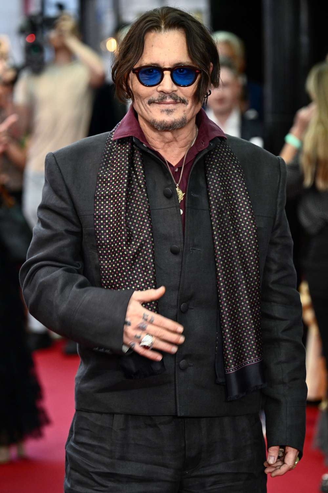

Johnny Depp
American Actor and Musician

John Christopher Depp II (born June 9, 1963) is an American actor, producer, and musician. Known for his eclectic and unorthodox film roles, he has won numerous accolades and is famous worldwide for portraying iconic characters like Captain Jack Sparrow. Beyond cinema, he has made significant contributions to rock music as a member of the Hollywood Vampires.
Important Life Events
- Born in Owensboro, Kentucky, on June 9, 1963.
- Started his acting career with a role in the horror film A Nightmare on Elm Street (1984).
- Achieved widespread teen-idol status through the television series 21 Jump Street (1987).
- Received his first Academy Award nomination for Pirates of the Caribbean: The Curse of the Black Pearl (2003).
- Formed the supergroup Hollywood Vampires alongside Alice Cooper and Joe Perry in 2012.
Key Iconic Roles
- Captain Jack Sparrow in the Pirates of the Caribbean series
- Edward Scissorhands in Edward Scissorhands
- Willy Wonka in Charlie and the Chocolate Factory
- Sweeney Todd in Sweeney Todd: The Demon Barber of Fleet Street
- Mad Hatter in Alice in Wonderland